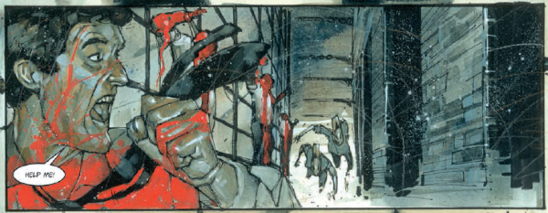

A brutal murderer arrives at the megalithic prison of Stone Island as prisoners start to transform into ravening beasts.
There is a tenuous narrative link, and a stronger thematic link from this story to Ian Edginton's "Wheel of Worlds" multiverse. Conceptually, the idea of a hell dimension, where trapped entities constantly strive to break out into the other realities features strongly in (amongst others) Ampney Crucis. Both tales are depicted by Simon Davis, and the creatures of the otherworld share the battlecry "KHIII".
Art by Simon Davis
| Story Title | Parts | Pages | w indicates a wraparound coverCovers | Year(s) | Issues | Writer | Artist | Colourist | Letterer |
|---|---|---|---|---|---|---|---|---|---|
| Stone Island | 8 | 45 | 1502: Simon Davis 1 | 2006 | 1500-1507 | Ian Edginton | Simon Davis | <-- | 1‑7: Ellie De Ville 8: Annie Parkhouse various |
| The Harrowers | 10 | 60 | 1553: Simon Davis 1 | 2007 | 1550-1559 | Ian Edginton | Simon Davis | <-- | 1‑6: Ellie De Ville 7‑10: Simon Bowland various |
| year | episodes | pages |
| 1996 | 0 | 0 |
| 1997 | 0 | 0 |
| 1998 | 0 | 0 |
| 1999 | 0 | 0 |
| 2000 | 0 | 0 |
| 2001 | 0 | 0 |
| 2002 | 0 | 0 |
| 2003 | 0 | 0 |
| 2004 | 0 | 0 |
| 2005 | 0 | 0 |
| 2006 | 8 | 45 |
| 2007 | 10 | 60 |
| 2008 | 0 | 0 |
| 2009 | 0 | 0 |
| 2010 | 0 | 0 |
| 2011 | 0 | 0 |
| 2012 | 0 | 0 |
| 2013 | 0 | 0 |
| 2014 | 0 | 0 |
| 2015 | 0 | 0 |
| 2016 | 0 | 0 |
| 2017 | 0 | 0 |